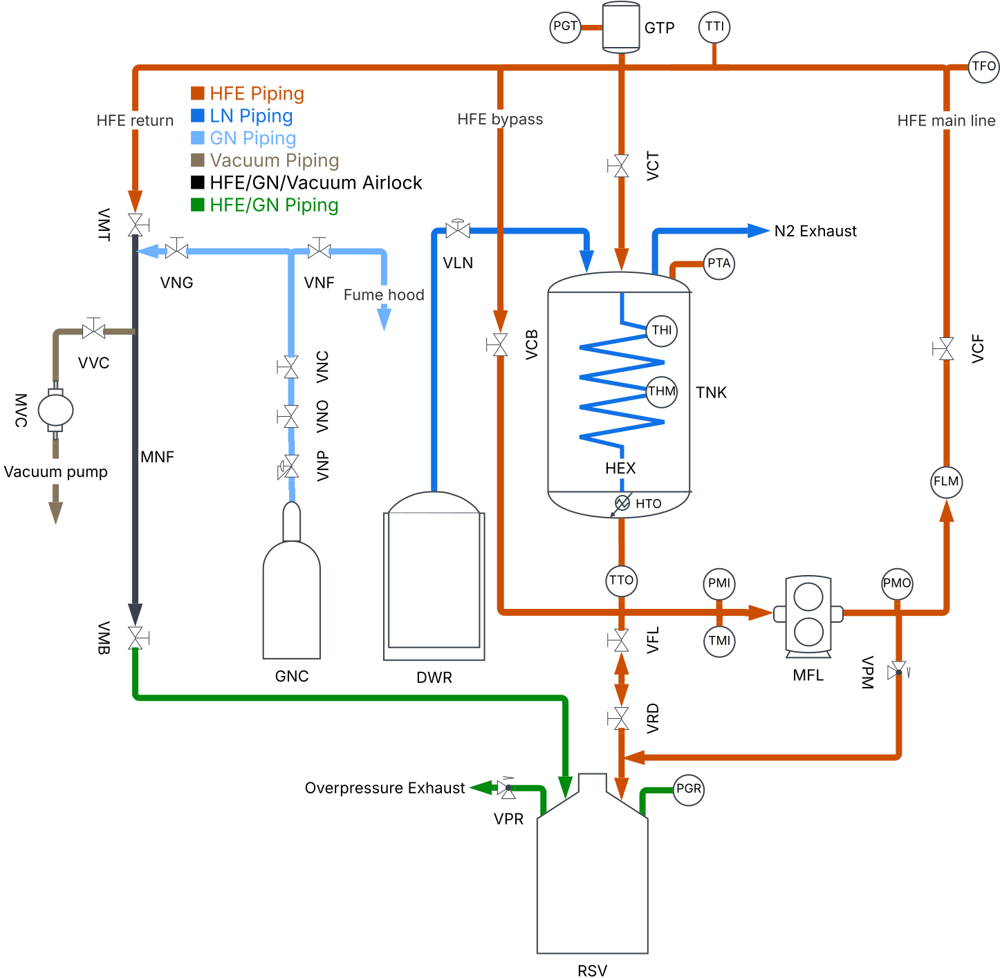

Connection
Initializing…
Reflects telemetry WebSocket state.
Welcome to the HFE operations console. Use this page for quick status checks, then dive into the Pump or Heat Exchanger panels for detailed control and telemetry.
Initializing…
Reflects telemetry WebSocket state.
—
—
Displays the pump's frequency.
—
Shows whether the LN valve is open or closed.
—
Pressure difference calculated from the PMO and PMI sensors.
Active: —
Valid now: —
Valid temps: —
No telemetry yet.
Set the analog command for the circulation pump and watch live drive telemetry. This setup commands the Fuji FRENIC-Mini from 0 to 71.7 Hz, which is about 0 to 2150 rpm estimated on the 1 HP inverter-duty Baldor motor (1770 rpm at 60 Hz, 2700 rpm max at 90 Hz). Output frequency comes from M09, output current/voltage and input power come directly from W05/W06/W21, the percent badges are referenced to the motor and pump limits shown below, and motor speed is estimated from output frequency at 30 rpm/Hz. Flow is measured separately by the Krohne meter and is not inferred here. Run/Stop remains controlled on the VFD keypad for safety.
Percent badges are referenced to 71.7 Hz max, 3.4 A motor FLA, 230 V base, and about 873 W estimated rated electrical input.
Control the LN valve, heaters, and temperature targets for the heat exchanger from this tab. Be careful with the heaters: they are prone to burning or short-circuiting if left on too long and are not yet protected by breakers. The LN exhaust heater is also not installed yet.
Closed
Mode: —
Live fluid telemetry and derived properties for the current test fluid.
HFE-7200
100% composition
Baseline fluid for the first commissioning runs.
—
(±0.05 bar)
Tank pressure sensor.
—
—
—
—
—
Awaiting TTO and TTI temperatures
Awaiting telemetry…
Awaiting telemetry…
Process and instrumentation diagram for the HFE loop, with the component names used throughout this UI.

VNG — valve, gaseous nitrogenVNC — valve, nitrogen to lab ceilingVNO — valve, nitrogen pressure regulator outletVNP — valve, nitrogen pressure regulatorVNF — valve, nitrogen fume hoodVLN — valve, liquid nitrogenVVC — valve, vacuumVMB — valve, manifold bottomVMT — valve, manifold topVCT — cryogenic valve, tankVCB — cryogenic valve, bypassVCF — cryogenic valve, flow meterVFL — valve, feed lineVPR — pressure relief valve, reservoirVPM — pressure relief valve, pumpVRD — valve, reservoir downcomerTTEST — temperature, temporary test thermocoupleTHI — temperature, HEX inletTHM — temperature, HEX middleTTI — temperature, tank inletTTO — temperature, tank outletTMI — temperature, pump inletTFO — temperature, flow meter outletPTA — pressure, tankPMI — pressure, pump inletPMO — pressure, pump outletPGT — pressure gauge, gas trapPGR — pressure gauge, reservoirFLM — flow meterHTO — heater, tank outletMFL — pump, fluidMVC — pump, vacuumDWR — dewarGNC — gaseous nitrogen cylinderRSV — reservoirDRM — drumGTP — gas trapTNK — tankHEX — heat exchangerMNF — manifoldLRT — return lineLFD — feed line